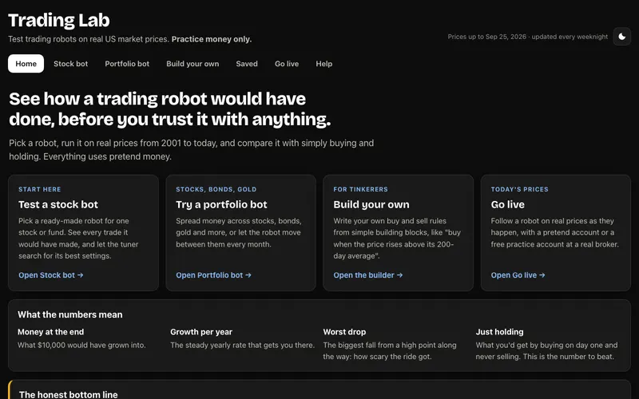

Latest update · Tool
Trading Lab
Test trading robots on 25 years of real US prices, for single stocks or mixes of stocks, bonds and gold, with a fair exam against overfitting and live practice trading.
- Vanilla JS
- GitHub Actions
Open Code